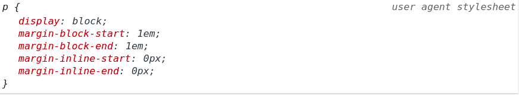

em unit is a multiplier for the parent element size
by default the <p> element has a margin and a font size of 1em.
here is a p element inside a 1.5em div (16 * 1.5 * 1 = 24px)
the confusing thing here the margins also will change their value to 24px.
this is fucking confusing me, the padding(margin?) takes the 1em of the p same element and not the parent.
Another negative thing, changing in fontsize setting will affect the relative to the html/root element only and will not affect the relative to a fixed parent.
the best practice is to not use that shit w sf.